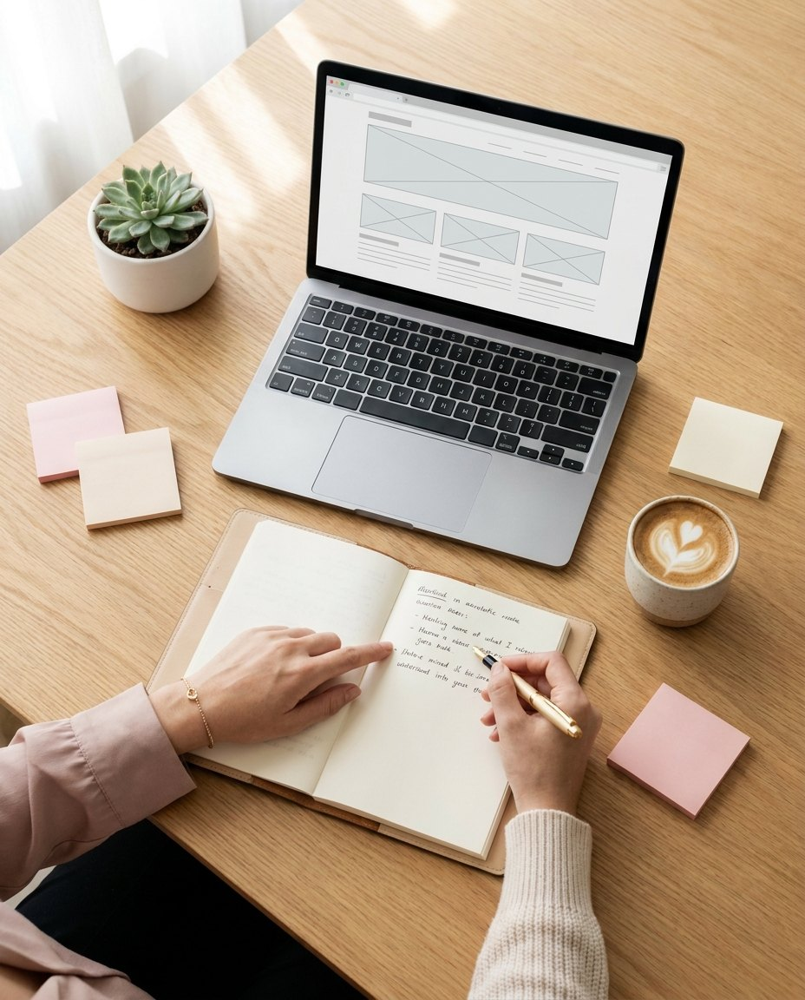
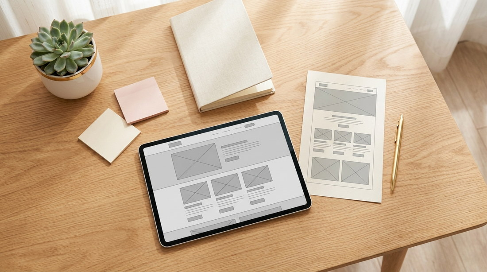
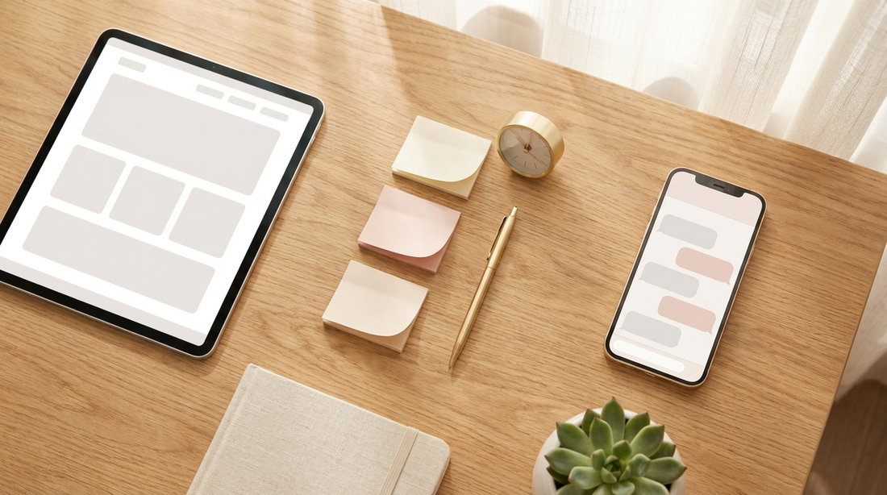
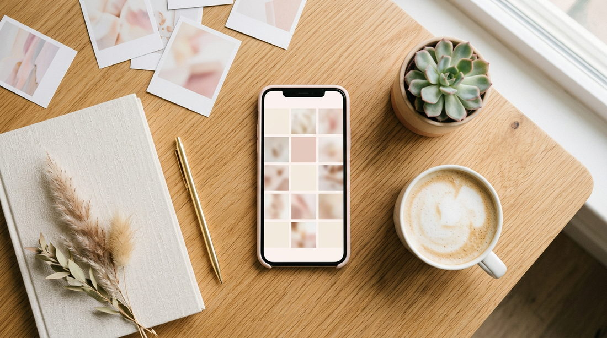
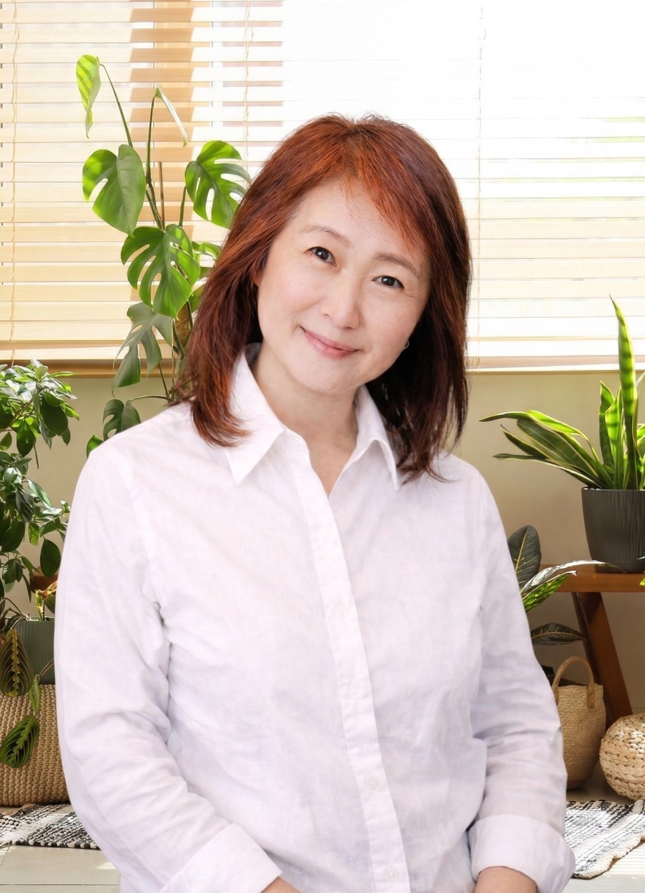

Harmony Web Design
あなたの想いを引き出して、
売れる言葉と仕組みをまるごと作る。
Web制作＆マーケティング。

Problems
Webで集客したいけど、何から始めればいいかわからない
制作会社に「原稿を送ってください」と言われて、手が止まっている
ホームページはあるのに、お問い合わせがほとんど来ない
自分のサービスの良さを、うまく言葉にできない
UTAGEやLINE公式を導入したいけど、設定が難しすぎる
きれいなサイトを作ったのに、集客につながっていない
Reasons
Zoomでお話を聞きながら、LP用・ウェブサイト用の文章を私がまとめます。「何を書けばいいかわからない」というストレスはゼロ。あなたはお話しするだけで大丈夫です。
セールスライティングとマーケティングを、ステップメール教材で有名な上野健一郎氏に1年間直接師事して学びました。きれいなだけのページではなく、お問い合わせや申し込みにつながる言葉と導線を設計します。
上場企業の広報部門でウェブ担当として13年。発注する側が何を求めていて、何があると嬉しいかを肌で知っています。進捗の共有、素材の準備、修正のやり取り。「制作会社とのやり取りが不安」という方にこそ、安心していただけるクライアントワークをお約束します。
コーチングや心理セラピーを学んでいるので、ヒアリングではあなたの本当の強みやお客様に届けたい想いを丁寧に引き出します。自分では気づいていなかった魅力が言語化される。そんなヒアリングの時間そのものに価値があると言ってくださるお客様もいます。
30年のWeb開発経験があるので、LP制作はもちろん、サイト構築、ステップメール設計、LINE公式の立ち上げ・メニュー作成まで、すべてワンストップで対応できます。窓口が一つだから、やり取りもシンプル。「あの件はあっちに聞いて」ということがありません。
Services

あなたのサービスの魅力を1ページに凝縮。Zoomインタビューから文章を起こし、デザインまで一貫して制作します。
LP・メルマガ・LINE・決済。バラバラだった仕組みをUTAGEで一元管理。「登録→教育→販売」の流れを自動化して、あなたが本業に集中できる環境を作ります。

LPで興味を持ってくれた方に、ステップLINEで信頼を積み重ねて申し込みにつなげる仕組みをセットで構築。「寝ている間に申し込みが入っていた」を実現します。

Instagramの投稿設計・プロフィール改善・LPへの導線づくりをサポート。「毎日投稿しているのに反応がない」を解消します。
Flow
30分のZoomで現状のお悩みをお聞きします。「こんなこと聞いていいのかな」ということでも大丈夫です。まずはお気軽にお話ししましょう。
あなたのサービスや理想のお客様像を深くお聞きします。「自分の中身ってこれだったんだ」と気づく方も多いです。最適なプランをご提案します。
インタビュー内容をもとに文章とデザインを制作します。原稿を書いていただく必要はありません。途中経過を共有しながら一緒に作り上げていきます。
修正を重ねて完成させます。公開後の操作方法もお伝えします。
1ヶ月後に「成果はいかがですか」とご連絡します。次のステップとしてUTAGEの導入や自動化が必要になったときも、いつでもご相談ください。
Works
ヒアリングから文章・デザインまで、まるごとお手伝いしたサイトです。
Voice
製作者側の好みやセンスではなく、こちらのブランディングをベースとしたアドバイスをもらえるのがありがたかったです。私のイメージを提案してくださいました。それがとても良い感じでした。前向きで素敵な女性で、専門性も高い。安心してお任せできました。
忙しくてなかなか原稿を書く時間が取れませんでしたが、丁寧なヒアリングをしていただき、思い通りのサイトが完成しました。素敵に表現してくださり、満足しています。
Profile

Harmony Web Design
東京でWeb制作とマーケティングのコンサルティングをしています。
上場企業の広報部門でウェブ担当として13年勤務。セールスライティングとマーケティングは上野健一郎氏に1年間直接師事。コーチングも学んでいます。
本物の力を持っているのに「伝え方」で損している方が多い。そこを一緒に言語化して、仕組みに落とし込むのが、一番好きな仕事です。
FAQ
はい。Zoomでお話しいただくだけで制作を進められます。操作が必要な場面では画面を共有しながらご一緒します。
はい。Zoomインタビューであなたのお話を聞きながら、私が文章をまとめます。「書くのが苦手」という方にこそ喜ばれています。
個人事業主の方を中心に、幅広い業種に対応しています。「自分のサービスに自信はあるけど、伝え方がわからない」という方のお力になれます。
集客から販売までを自動化できるツールです。LP、メルマガ、LINE、決済をひとつにまとめられます。まずは無料相談で「自分に必要かどうか」からお話ししましょう。
LP制作で約2〜3週間、UTAGE構築で約1ヶ月が目安です。
何から始めたらいいかわからない、でも大丈夫です。
週1回、個人事業主のためのWeb集客のコツをお届けします。